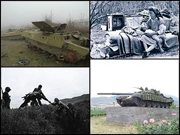

QARABAĞ MÜHARİBƏSİ
Qarabağ müharibəsi (erm. Ղարաբաղյան պատերազմ) — 1980-ci illərin sonlarından 1994-cü ilin mayına kimi Azərbaycanın cənub-qərb hissəsində yerləşən Qarabağ bölgəsində Ermənistan Respublikası və onun tərəfindən dəstəklənən Qarabağın etnik ermənilərinin əksəriyyəti ilə Azərbaycan Respublikası arasında baş vermiş etnik və ərazi münaqişəsi. Keçmiş DQMV-də Ermənistan ilə birləşmək istəyən separatçı hərəkatının tələbi 1988-ci ildə nisbətən dinc şəkildə başlasa da, növbəti aylarda SSRİ dövlətinin süqutunun yaxınlaşması səbəbindən fərqli istiqamətdə vüsət alaraq, etnik azərbaycanlılar ilə ermənilər arasında getdikcə böyüyən şiddətli münaqişəyə çevrilmiş və hətta etnik təmizləmə iddialarına səbəb olan qanlı toqquşmalarla müşaiyət olunmuşdur. Baş verənlərin fonunda, keçmiş SSRİ respublikaları olan Azərbaycan və Ermənistan 1988-ci ildən başlamaqla Dağlıq Qarabağın yüksəkliklərində uzun və elan edilməmiş müharibə aparırdı. Azərbaycanın ilk vaxtlarda əsas məqsədi separatçı hərəkatı məhv etmək, Ermənistanın niyyəti isə Azərbaycanın beynəlxalq çərçivədə tanınan ərazilərinin bir hissəsini ilhaq etmək idi. Bu zaman kəsiyində, DQMV-nin yerli parlamenti DQMV-nin Ermənistanla birləşdirilməsinin lehinə səs verib, referendum keçirdi. Dağlıq Qarabağın azərbaycanlı əhalisinin referendumu boykotuna rəğmən erməni əsilli seçicilərin əksəriyyəti sözügedən aktın lehinə səs verərək münaqişənin yeni qarşıdurmalar fazasına keçid etməsini sürətləndirdi. Azərbaycandan ayrılmaq haqqında bəyənnamə bu torpaq münaqişəsinin son nəticəsi olmuşdur. Azərbaycan SSR-dən müstəqilliyini elan etdikdən sonra Qarabağ ermənilərinin əksəriyyəti, Azərbaycandan çəkilmək qərarına gəlmiş və qondarma Dağlıq Qarabağ Respublikasının müstəqilliyini elan etmişdirlər. Tərəflər arasında genişmiqyaslı döyüşlər 1992-ci ilin qışında başlamışdır. Avropada Təhlükəsizlik və Əməkdaşlıq Təşkilatı (ATƏT) kimi bir neçə təşkilat, tərəflər arasındakı münaqişənin həllinin sonunu gətirmək istəsə də, cəhdlər uğursuz olmuşdur. 1993-cü ilin yazında Ermənistan qüvvələrinin anklavın tərkibində olmayan torpaqları işğal etməsi, regiondakı digər ölkələrin müharibəyə qatılması üçün təhdid yaratmışdır. 1994-cü ildə müharibə başa çatana qədər ermənilər Qarabağın əksər hissəsini demək olar ki, tam nəzarətlərinə keçirib, əlavə olaraq anklavın tərkibində olmayan Azərbaycan torpaqlarının 9%-nə nəzarət edirdilər. Münaqişə nəticəsində Azərbaycandan 230.000 erməni, Ermənistan və Qarabağdan isə 800.000 azərbaycanlı məcburi köçkün vəziyyətinə düşmüşdür. 1991–1994-cü illərdə Qarabağda və dövlət sərhədində baş vermiş döyüş əməliyyatlarında 11.557 Azərbaycan hərbçisi şəhid olub. Ən çoxsaylı itkilər 1992–1994-cü illərdə davam edən hərbi əməliyyatlar zamanı baş verib. Erməni qüvvələrinin əsas itkiləri Azərbaycan ordusunun 1992-ci ilin yayında həyata keçirdiyi uğurlu hücum əməliyyatları zamanı qeydə alınıb. Azərbaycan ordusunun itkiləri isə əsasən Ağdam döyüşlərində, habelə 1994-cü ilin qış-yaz aylarında Kəlbəcəri geri almaq üçün təşkil edilmiş hücum əməliyyatlarında baş verib. 1994-cü ilin mayında Rusiyanın dəstəyi ilə atəşkəs əldə olunmuşdur. Daha sonra münaqişənin ATƏT-in prinsipləri əsasında sülh yolu ilə danışıqlar vasitəsilə həlli üçün ATƏT-in Minsk qrupu yaradılıb.

Azərbaycan-Ermənistan müharibəsi
Tezliklə İlk Ermənistan Respublikası və Azərbaycan Xalq Cümhuriyyəti arasında döyüşlər üç spesifik bölgədə (Naxçıvan Muxtar Respublikası, Zəngəzur və Qarabağ) başladı.

Qara Yanvar
Millətlərarası münaqişə hər iki ölkənin əhalisi arasına baş verirdi: Azərbaycanda ermənilər Ermənistana, Ermənistan azərbaycanlıları isə Azərbaycan qaçmağa məcbur olmuşdu.
Xocalı soyqırımı
Xocalı 1991-cı ilin oktyabrından blokadada idi. Oktyabrın 30-da quru yolu əlaqəsi kəsilmiş və yeganə nəqliyyat vasitəsi olaraq helikopter əlaqəsi qalmışdı.
İkinci Qarabağ müharibəsi
İkinci Qarabağ müharibəsi, Vətən müharibəsi və ya "Dəmir Yumruq" əməliyyatı — Azərbaycan Silahlı Qüvvələri və Ermənistan Silahlı Qüvvələri arasında qarşıdurma.